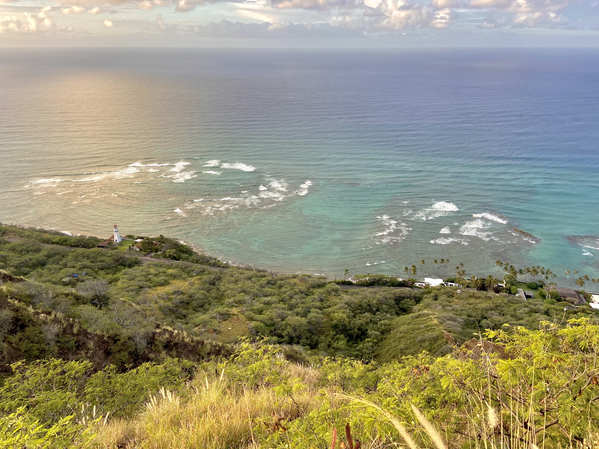

Wandered and Worth It
Helping you explore the places that left a mark on me.
Travel is officially defined as 'going from one place to another, typically over a distance of some length.' But to me, it means so much more. Travel is discovering new people, places and cultures. It's experiencing things you've never seen or done before. It's stepping outside your comfort zone and finding yourself transformed.
I know travel comes with barriers—time, money, responsibilities. But I believe everyone deserves the chance to see new places and broaden their horizons. I've been fortunate to fill my life with travel, exploring culturally diverse destinations around the world. Whether you're planning your first adventure or you're a seasoned traveler seeking fresh recommendations, I hope this website serves as your guide to exploring the world.
Start Exploring! ExtraFeatures

Extra Content
Discover additional resources and insights to enhance your travel experience.
Featured Content
Discover featured travel content and inspiration for your next adventure.

Highlights
Explore the most popular travel destinations and experiences.
Travel Stories
Read inspiring stories from fellow travelers around the world.